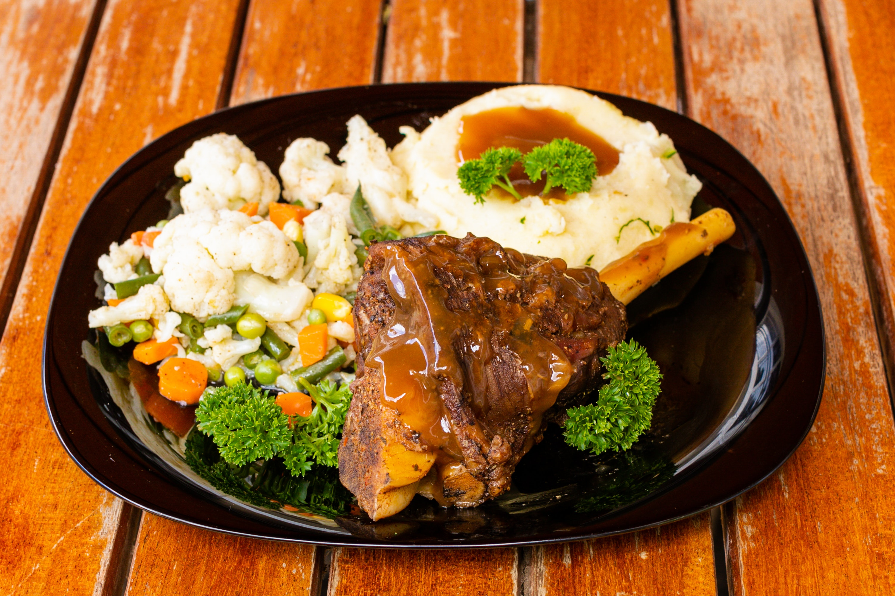

Marshed potatoes

This is a marshed potatoes side dish
Ingredients
- potatoes
- Salt
- cheese
- parsley
Steps
- Peel and boil the potatoes
- Crush the potatoes and mix it with the cheese
- Put it in the oven and let it cook fot 20miutes
- Add parsley for decoration